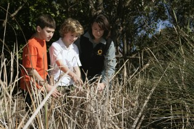
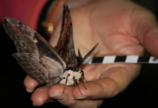
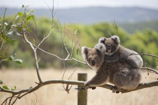
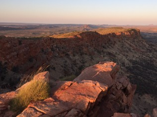
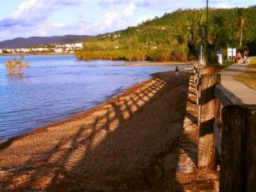
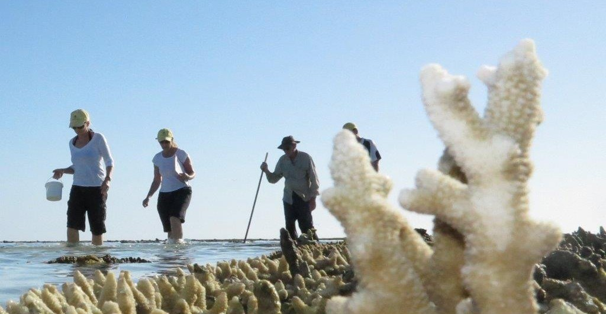
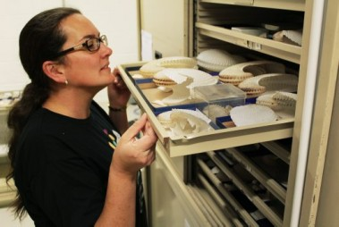

Why not get outdoors this November and help improve Australia’s biodiversity knowledge by joining a citizen science event? Credit: Sydney Olympic Park Authority
With summer almost here, now is the perfect time to get out of the house and enjoy Australia’s great outdoors. And what better way to do it than by joining one of the citizen science events that are happening across the country this November! Not only will you be out enjoying nature, but you’ll be making a valuable contribution to Australia’s biodiversity knowledge as well, with recorded sightings being fed into the Atlas of Living Australia(ALA).
Events include the Mimosa Rocks BioBlitz, which is taking place on the 7th and 8th of November; the World Parks Congress BioBlitz, which will be held in Sydney on Sunday November 16th; and the National Koala Count, which will run from the 7th to 17th of November.
The picturesque Mimosa Rocks National Park is located on the NSW south coast and is home to an amazing array of flora and fauna, including Potaroos, Glossy Black-cockatoos, orchids, and cycads to name just a few. The Mimosa Rocks BioBlitz will include 43 surveys hosted by expert scientists and naturalists. For more information, including what surveys are happening when and how to register, please visit www.alcw.org.au.

Just one of the beautiful creatures you might discover. Credit: Libby Hepburn
The World Parks Congress (WPC) BioBlitz is happening as part of PlanetFest, and, with the help of families and nature lovers, aims to capture a snapshot of the biodiversity at Sydney Olympic Park. Experts will take participants on guided nature surveys where they’ll go hunting for birds, insects, plants, frogs and water bugs. There will be hands on displays in the BioBlitz marquee, providing the opportunity to learn more about BioBlitz events and how they assist protected area managers to involve the public in scientific surveys. For more information and to register for the event, please visit http://wpcbioblitz.eventbrite.com.au.
Both the Mimosa Rocks and WPC BioBlitz events are using the international product, iNaturalist, to register sightings. These records will be incorporated into the ALA on a regular basis.

Join the fun of the National Koala Count and help us better understand these furry friends.
And for those who aren’t in NSW, why not take part in the National Koala Count, which is open to participants across Australia. A freely-available, GPS-enabled smartphone app, BioTag, has been developed especially for the event by the ALA. The app allows participants to easily record their koala sightings anywhere across the country. BioTag is available for both android and Apple mobile devices and can be downloaded from Google play and iTunes, just search for BioTag. People who do not own a smartphone or tablet can enter their sightings directly into the National Parks Association’s Data Portal. To get involved, simply register at www.koalacount.org.au, download BioTag, or log onto the Data Portal, and you are ready to start counting!
By participating in any (or all!) of these events you will be helping to build a more comprehensive picture of the numbers and locations of Australian plant and animal species across the landscape, which is highly important for the effective management of our precious and unique biodiversity.
Article
ESA delegates learn about the ALA Spatial Portal
Over 50 delegates from the Ecological Society of Australia (ESA) conference now have a better understanding of the data and tools provided by the Atlas of Living Australia thanks to a ½ day workshop run by Lee Belbin at last week’s ESA conference in Alice Springs. The workshop aimed to familiarize delegates with the key tools, data and access options available through the Atlas, with particular focus on the Spatial Portal. Topics covered included:

Alice Springs provided a magnificent backdrop for the ESA conference.
- An outline of Atlas data, including species, areas, layers and facets
- The research interface (i.e. Spatial Portal)
- The tools of the Atlas and how to use them
- Importing and exporting data and results (including ALA4R library)
- Other Atlas resources: case studies, tutorials, blog, web services, FAQs etc.
The workshop also provided an ideal opportunity to identify and discuss gaps in the Atlas, and for the Atlas team to gain useful feedback from the research community.
The popularity of the optional workshop was very encouraging for the Atlas team, as it showed the keen interest in the site by the ecological research community. Anyone interested in learning how to use the advanced features of the Atlas Spatial Portal is very welcome to contact us.
Article
Upcoming event: ReefBlitz, Cannonvale Beach, QLD.
On October the 24th and 25th, the first ever ReefBlitz will be happening at Cannonvale Beach (just north of Airlie Beach) in Queensland.

The ReefBlitz will take place at picturesque Cannonvale Beach, Queensland.
Whether you want to be up at the crack of dawn for a spot of bird watching, take a late afternoon stroll to Pigeon Island to count sea cucumbers, or ramble over the rocky foreshore, ReefBlitz 2014 at Cannonvale Beach has it all. Sign up today for one of 23 surveys on offer to document the flora and fauna of Cannonvale Beach, stay for a presentation or interactive science display at basecamp or lend a helping hand in the beach clean-up. All ReefBlitz activities are free and are suitable for a wide range of ages.
Data from the ReefBlitz will be recorded using iNaturalist and will be integrated into the Atlas of Living Australia.
The ReefBlitz concept was developed by Earthwatch in partnership with the Great Barrier Reef Foundation.
If you’re near Airlie and would like to participate, then register here!

Join in the fun, and help improve our knowledge about Australia’s biodiversity.
Article
DigiVol reaches 100,000 transcriptions and a mollusc milestone
DigiVol is a collaboration between the Australian Museum and the Atlas of Living Australia that was initially an experimental foray into crowd-sourcing. At the time, the notion that there were online volunteers willing to help natural history collections capture their data seemed rather far-fetched.

Credit: Melissa Graf © Australian Museum
It was definitely a risk: crowd-sourcing was in its infancy and there were no other museums providing online volunteers with an opportunity to help digitise their natural history collections. But now, DigiVol has not only become a means for Australia’s museums to tackle the enormous task of digitising their collections, but institutions like the Smithsonian, New York Botanic Gardens, and Kew Gardens have also chosen DigiVol to host their own virtual expeditions to digitise their collections.
As further proof of DigiVol’s success, we recently recorded two impressive milestones. Our volunteers at DigiVol Online have now completed over 100,000 transcription tasks, with some of our most prolific volunteers completing over 10,000 transcription tasks each. Also, in just two short years, DigiVol Lab volunteers at the Australian Museum have created over 70,000 images of the Museum’s very large Malacology (think molluscs, such as snails, slugs, clams, octopus and squid) collection. These milestones represent a monumental contribution to digitising the collections of museums and herbaria from Australia and around the world.
Article
ALA helps bring CSIRO’s new biodiversity book to life
CSIRO’s new book, Biodiversity: Science and Solutions for Australia, is jam-packed with the latest scientific knowledge about Australia’s biodiversity, so of course the Atlas of Living Australia is a key feature.
 The book, which is available free from www.csiro.au/biodiversitybook, describes the ancient origins and unique features of Australia’s plants, animals and ecosystems, and looks at how they are currently tracking. It highlights indigenous perspectives on biodiversity and describes how Australia’s biodiversity interacts with agriculture, the resources sector, cities and with our changing global environment. The book also identifies practical solutions for managing Australia’s globally unique natural assets, including the invaluable role of the ALA.
The book, which is available free from www.csiro.au/biodiversitybook, describes the ancient origins and unique features of Australia’s plants, animals and ecosystems, and looks at how they are currently tracking. It highlights indigenous perspectives on biodiversity and describes how Australia’s biodiversity interacts with agriculture, the resources sector, cities and with our changing global environment. The book also identifies practical solutions for managing Australia’s globally unique natural assets, including the invaluable role of the ALA.
A number of case studies throughout the book demonstrate the use of the ALA. One case study highlights how the ALA is being used to predict future trends in Australian biodiversity by providing information on the location and conservation status of Australia’s species. Others describe how the ALA is guiding revegetation under a changing climate, and how it is assisting in the design of Australia’s National Reserve System. Lastly, the ALA’s ‘Explore your area’ function provides a great example of how readers of the book can get to know the biodiversity in their neighbourhood.
The ALA is also a key part of the interactive eBook version of the book. Every species mentioned in the book links to the relevant species page on the ALA, greatly increasing the amount of information available to readers with a simple click on the screen. The eBook also contains links to videos with the book’s authors, animations, articles and further reading items.
For your free copy of the book, head to www.csiro.au/biodiversitybook.